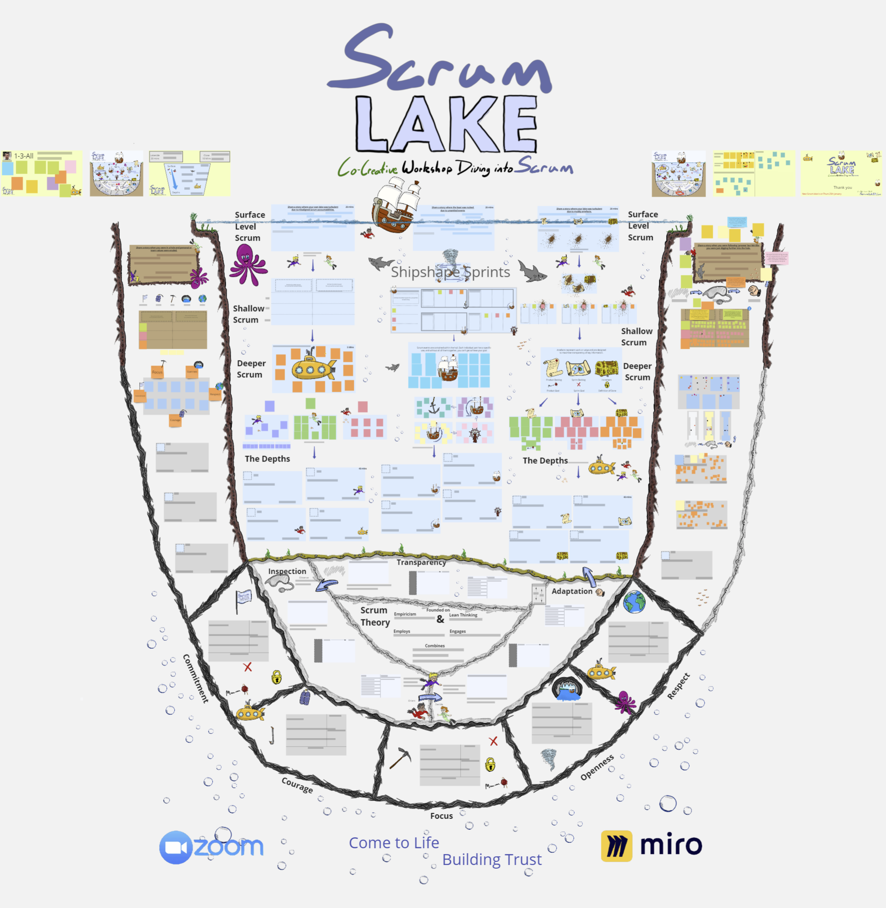

Co-Creative Scrum Workshops
Scrum Lake is a virtual workshop for Scrum enthusiasts of all levels. You can share stories, learn techniques and explore Scrum theory, practice and reality with Scrum Masters, Product Owners and Agile Coaches from accross the planet. Together, we deepen our understanding of Scrum through a shared experience.

We are very proud that Scrum Lake workshops are consistently well received, this is due to the unique approach of our workshops.
